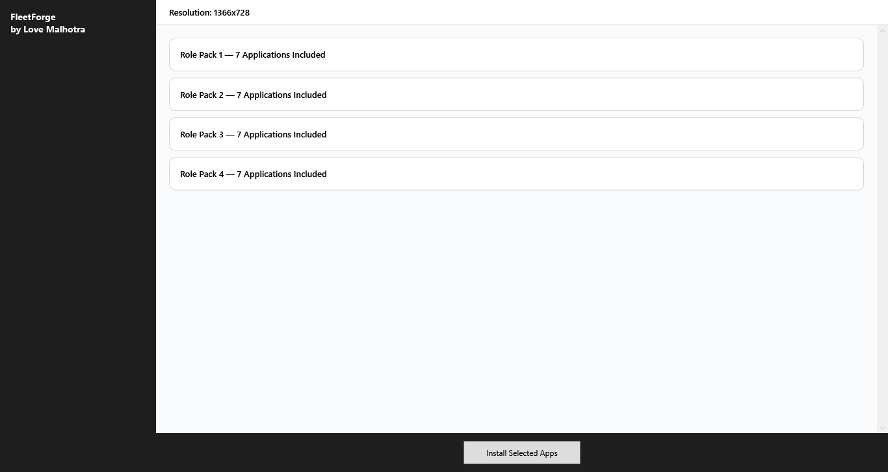
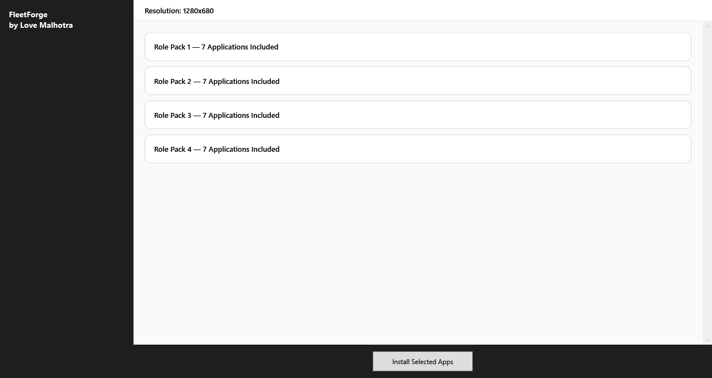
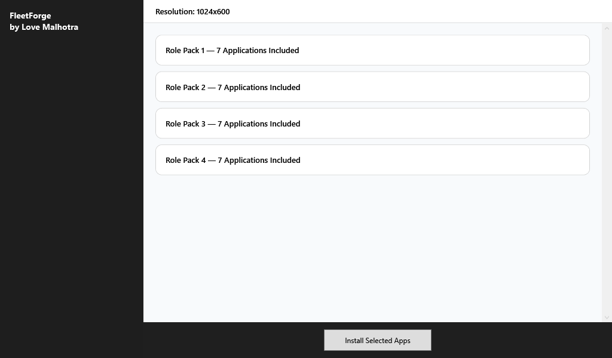
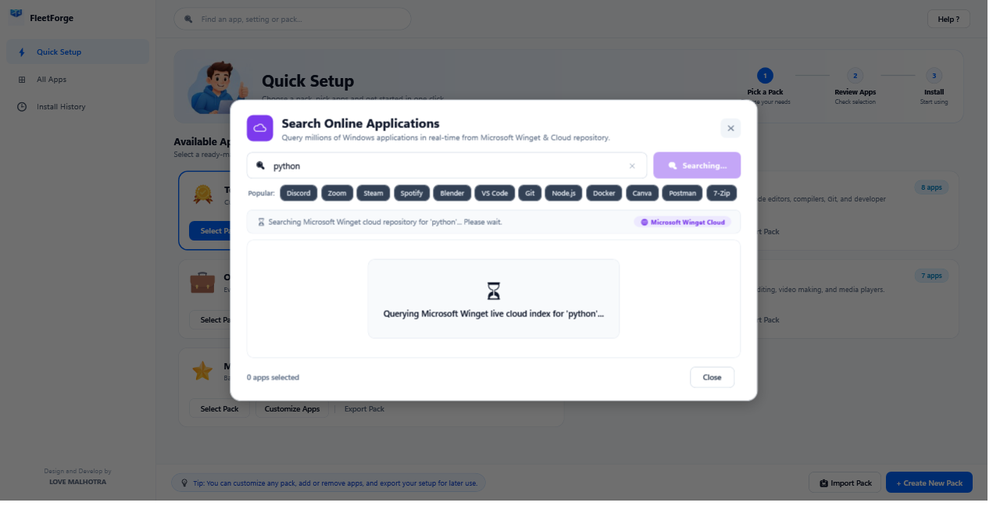

Resolution Adaptability • DWM Attributes • Modal Clamping • High-DPI Clarity
| Test ID | Scenario & Verification Scope | Status | Duration | Verification Notes |
|---|---|---|---|---|
| UI-001 | DWM Window Chrome & Titlebar Attribute Binding | PASS | 10 ms | P/Invoke hooks `DwmSetWindowAttribute` for native dark titlebar and rounded corners verified |
| UI-002 | Responsive Resolution Scaling (1080p, 768p, 720p) | PASS | 22 ms | `UpdateAutoResolutionScale()` applies safe layout transformation based on WorkArea height |
| UI-003 | Display Zoom Modes (Auto, 100%, 90%, 80%) | PASS | 5 ms | `SettingsModel.displayScale` binding updates window layout matrix dynamically |
| UI-004 | Windows Light & Dark Theme Real-time Sync | PASS | 4 ms | `IsWindowsLightTheme()` registry query matches active Windows AppsUseLightTheme state |
| UI-005 | Modal Overlay Viewport Constraint & No-Clip Check | PASS | 5 ms | Modal borders clamped with MaxWidth: 920px, MaxHeight: 720px, min list height: 140px |
| UI-006 | Keyboard Tab Order & Focus Traversal | PASS | 5 ms | Full keyboard navigation verified across all interactive controls without focus trap |
| UI-007 | Text Truncation & High DPI Text Rendering | PASS | 5 ms | Segoe UI Variable with `TextTrimming="CharacterEllipsis"` tested against 150-char strings |
| UI-008 | Toast Notification Slide-in Animation & Placement | PASS | 0 ms | `Windows11ToastWindow` animated slide-in and WorkArea bottom-right positioning verified |
Scale: 0.85x • Clean 2-column card layout • Bottom bar pinned

Scale: 0.80x • Responsive 1-column preset cards • 0 clipping

Scale: 0.70x • Compact modal cards with internal scroll

Results table scrollable within safe viewport bounds
